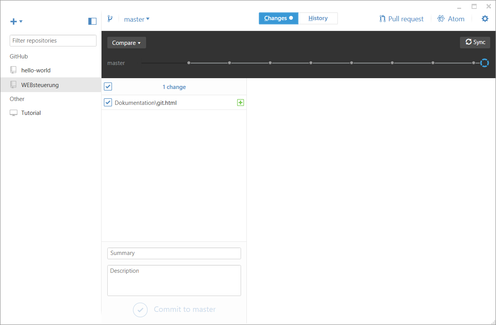

Die wichtigsten Erfahrungen und Erkenntnisse im Zusammenspiel mit GitHub Desktop, Atom & Windows10 beim erstellen einer Webpräsenz auf Git werden hier festgehalten. Das Dokument soll als Gedankenstütze und Nachschlagewerk dienen für die wichtigsten Anwendungsfälle.
Es empfiehlt sich einen Blick auf die Erklärungen des GitHub Flow zu werfen. Dort werden die Begriffe und das Standard vorgehen für das Bearbeiten von Git Daten im Team erläutert.
https://guides.github.com/introduction/flow/
Sind lokale Git Dateien geändert worden wird dies in GitHub Desktop wurden, z.B. mit dem Texteditor Atom. Muss im GitHub Desktop der letzte Punkt im Verlauf angewählt werden. Dies entspricht dann der aktuellen Veränderung. Ist diese Ausgewählt kann unten links mindestens das Feld Summary ausgefüllt werden. Dannach kann mit dem Synch Knopf der commit hochgeladen werden.
